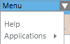
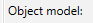
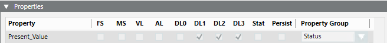
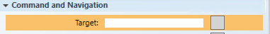
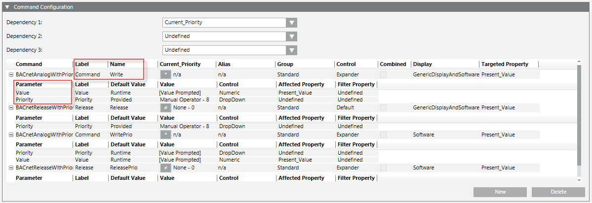
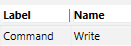
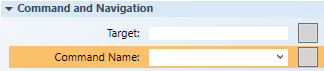
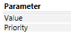
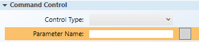
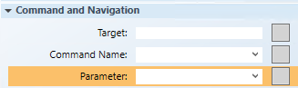

Gather Data Point Command Information
Gather Data Point Command Information
In this procedure, you will note the following information from the Models and FunctionsCommand Configuration table that is necessary for configuring a command control element or symbol:
- Name
- Parameter
- For easier viewing and navigation, launch a second System Manager pane: Select Menu in the upper-right corner of the pane, and then under Applications, select Start New System Manager Browser.

- A second instance of System Browser, labeled System Manager (2) is created. You can now switch between the new instance and any other window from the Windows taskbar or from the system Menu > Active tasks.
- Click Operating to switch to Engineering mode.
- In System Browser, select Management View.
- Select the device or data point you want to command.
- In the Object Configurator tab, from the Main section, double-click the Object model

text/button. - Click the Models and Functions tab, and in the Properties section, select the data point property you want to command, for example,
Present_Value.
NOTE: This property name is added at the end of the object name in the Target field of the Graphics Editor when you select Properties view > Command and Navigation properties and in the Command Control properties. For example:CCProject.ManagementView:ManagementView.FieldNetworks.PXRack.Hardware.Site_AS01.B_Block_Hra;.Present_Value
- With the data point property highlighted, scroll down and over to the Command Configuration section.
- From the Command Configuration table, note the following information below the headings:
- Name – You will enter the information under this heading, or select it from the drop-down menu, in the Command Name field of the Configuration and Navigation properties. See table below.
- Parameter– You will enter the information under this heading in the Parameter field of the Configuration and Navigation properties and in the Parameter Name field of Command Control properties section. See table below.
- To command an object from within a graphic, the selected information in the Models and FunctionsCommand Configuration table below is required in the Graphics Editor Command Control and Command and Navigation properties.

Models and Functions | Graphics Editor Properties | |
|---|---|---|
Command Configuration Table | Command Control | Command and Navigation |
 | XX |  |
 |
 |
 |
Next Steps
You are ready to create a command button, element, or custom command symbol. Do one of the following:
- Before you start, you may want to prepare your workspace for working with the elements on the graphic. If so, proceed the next topic.
- Otherwise, skip the next topic, and see Related Topics for a list of related button procedures or command control workflows.